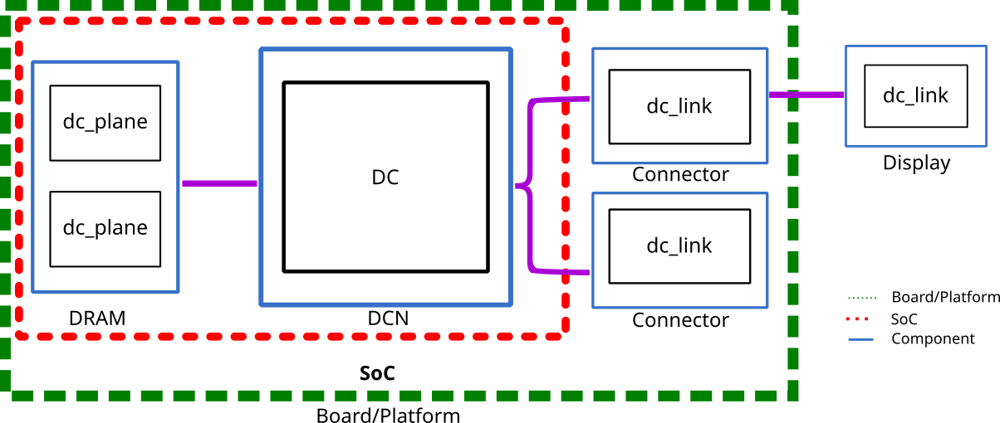

DC Programming Model¶
In the Display Core Next (DCN) and DCN Block pages, you learned about the hardware components and how they interact with each other. On this page, the focus is shifted to the display code architecture. Hence, it is reasonable to remind the reader that the code in DC is shared with other OSes; for this reason, DC provides a set of abstractions and operations to connect different APIs with the hardware configuration. See DC as a service available for a Display Manager (amdgpu_dm) to access and configure DCN/DCE hardware (DCE is also part of DC, but for simplicity’s sake, this documentation only examines DCN).
Note
For this page, we will use the term GPU to refers to dGPU and APU.
Overview¶
From the display hardware perspective, it is plausible to expect that if a problem is well-defined, it will probably be implemented at the hardware level. On the other hand, when there are multiple ways of achieving something without a very well-defined scope, the solution is usually implemented as a policy at the DC level. In other words, some policies are defined in the DC core (resource management, power optimization, image quality, etc.), and the others implemented in hardware are enabled via DC configuration.
In terms of hardware management, DCN has multiple instances of the same block (e.g., HUBP, DPP, MPC, etc), and during the driver execution, it might be necessary to use some of these instances. The core has policies in place for handling those instances. Regarding resource management, the DC objective is quite simple: minimize the hardware shuffle when the driver performs some actions. When the state changes from A to B, the transition is considered easier to maneuver if the hardware resource is still used for the same set of driver objects. Usually, adding and removing a resource to a pipe_ctx (more details below) is not a problem; however, moving a resource from one pipe_ctx to another should be avoided.
Another area of influence for DC is power optimization, which has a myriad of arrangement possibilities. In some way, just displaying an image via DCN should be relatively straightforward; however, showing it with the best power footprint is more desirable, but it has many associated challenges. Unfortunately, there is no straight-forward analytic way to determine if a configuration is the best one for the context due to the enormous variety of variables related to this problem (e.g., many different DCN/DCE hardware versions, different displays configurations, etc.) for this reason DC implements a dedicated library for trying some configuration and verify if it is possible to support it or not. This type of policy is extremely complex to create and maintain, and amdgpu driver relies on Display Mode Library (DML) to generate the best decisions.
In summary, DC must deal with the complexity of handling multiple scenarios and determine policies to manage them. All of the above information is conveyed to give the reader some idea about the complexity of driving a display from the driver’s perspective. This page hopes to allow the reader to better navigate over the amdgpu display code.
Display Driver Architecture Overview¶
The diagram below provides an overview of the display driver architecture; notice it illustrates the software layers adopted by DC:
The first layer of the diagram is the high-level DC API represented by the dc.h file; below it are two big blocks represented by Core and Link. Next is the hardware configuration block; the main file describing it is the`hw_sequencer.h`, where the implementation of the callbacks can be found in the hardware sequencer folder. Almost at the end, you can see the block level API (dc/inc/hw), which represents each DCN low-level block, such as HUBP, DPP, MPC, OPTC, etc. Notice on the left side of the diagram that we have a different set of layers representing the interaction with the DMUB microcontroller.
Basic Objects¶
The below diagram outlines the basic display objects. In particular, pay attention to the names in the boxes since they represent a data structure in the driver:

Let’s start with the central block in the image, dc. The dc struct is initialized per GPU; for example, one GPU has one dc instance, two GPUs have two dc instances, and so forth. In other words we have one ‘dc’ per ‘amdgpu’ instance. In some ways, this object behaves like the Singleton pattern.
After the dc block in the diagram, you can see the dc_link component, which is a low-level abstraction for the connector. One interesting aspect of the image is that connectors are not part of the DCN block; they are defined by the platform/board and not by the SoC. The dc_link struct is the high-level data container with information such as connected sinks, connection status, signal types, etc. After dc_link, there is the dc_sink, which is the object that represents the connected display.
Note
For historical reasons, we used the name dc_link, which gives the wrong impression that this abstraction only deals with physical connections that the developer can easily manipulate. However, this also covers conections like eDP or cases where the output is connected to other devices.
There are two structs that are not represented in the diagram since they were elaborated in the DCN overview page (check the DCN block diagram Display Core Next (DCN)); still, it is worth bringing back for this overview which is dc_stream and dc_state. The dc_stream stores many properties associated with the data transmission, but most importantly, it represents the data flow from the connector to the display. Next we have dc_state, which represents the logic state within the hardware at the moment; dc_state is composed of dc_stream and dc_plane. The dc_stream is the DC version of drm_crtc and represents the post-blending pipeline.
Speaking of the dc_plane data structure (first part of the diagram), you can think about it as an abstraction similar to drm_plane that represents the pre-blending portion of the pipeline. This image was probably processed by GFX and is ready to be composited under a dc_stream. Normally, the driver may have one or more dc_plane connected to the same dc_stream, which defines a composition at the DC level.
Basic Operations¶
Now that we have covered the basic objects, it is time to examine some of the basic hardware/software operations. Let’s start with the dc_create() function, which directly works with the dc data struct; this function behaves like a constructor responsible for the basic software initialization and preparing for enabling other parts of the API. It is important to highlight that this operation does not touch any hardware configuration; it is only a software initialization.
Next, we have the dc_hardware_init(), which also relies on the dc data struct. Its main function is to put the hardware in a valid state. It is worth highlighting that the hardware might initialize in an unknown state, and it is a requirement to put it in a valid state; this function has multiple callbacks for the hardware-specific initialization, whereas dc_hardware_init does the hardware initialization and is the first point where we touch hardware.
The dc_get_link_at_index is an operation that depends on the dc_link data structure. This function retrieves and enumerates all the dc_links available on the device; this is required since this information is not part of the SoC definition but depends on the board configuration. As soon as the dc_link is initialized, it is useful to figure out if any of them are already connected to the display by using the dc_link_detect() function. After the driver figures out if any display is connected to the device, the challenging phase starts: configuring the monitor to show something. Nonetheless, dealing with the ideal configuration is not a DC task since this is the Display Manager (amdgpu_dm) responsibility which in turn is responsible for dealing with the atomic commits. The only interface DC provides to the configuration phase is the function dc_validate_with_context that receives the configuration information and, based on that, validates whether the hardware can support it or not. It is important to add that even if the display supports some specific configuration, it does not mean the DCN hardware can support it.
After the DM and DC agree upon the configuration, the stream configuration phase starts. This task activates one or more dc_stream at this phase, and in the best-case scenario, you might be able to turn the display on with a black screen (it does not show anything yet since it does not have any plane associated with it). The final step would be to call the dc_update_planes_and_stream, which will add or remove planes.